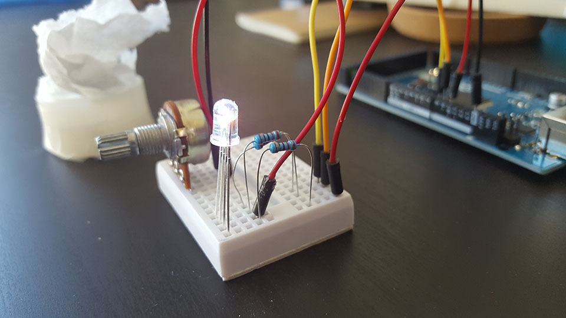

Using an Arduino, breadboard, LED, and some other miscellaneous electronics, I made a sunset that can fit in your hand. The clear plastic bulb in the above picture is a LED that can display multiple colors. The inspiration behind making this was F.lux, a program that adjusts the colors of your computer screen to match that of your circadien rhythm. After the sun sets, F.lux shifts the screen colors to be more red and orange. This LED serves as a proof of concept for lamp that is a physical version of F.lux.
A stumper
It turned out that LED was not very good at combining each of its colors ( red, green, and blue). It looked a lot like just three different LEDs sitting next to each other. After some experimenting, I realized I needed something to diffuse and combine the colors. Scotch tape diffused and mixed the colors a little bit, but not very well. Tissues turned out to be an effective solution - they have a lot of surface area for the light to bounce around in and mix together.